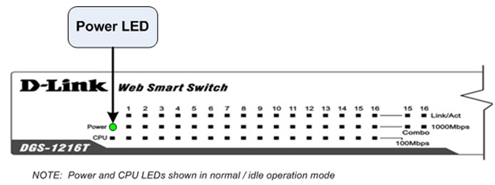

Operating Documentation
Direction 5307452-8EN, Rev# 4
Discovery CT750 HD Service Methods - Adv
Operating Documentation |
| Last Revised: | 26 June 2008 |
The follow information will assist in confirming if the CNS is experiencing a hardware fault. Although the following is not a complete set of diagnostics, it should be sufficient in determining if the CNS is suffering from hardware issues at the prescribe Field Replaceable Unit (FRU) level.
Illustration 1: Console Network Switch

| ELECTROCUTION HAZARD | |
| THOUGH THERE IS NO REASON TO OPEN THE CNS, CARE MUST BE TAKEN WHEN WORKING WITH THE CNS AND INSIDE THE GOC6 CONSOLE. | |
| USE PROPER LOCKOUT / TAGOUT PROCEDURES BEFORE REPLACING THE COMPONENTS. |
Before proceeding with the rest of this procedure, use the following checklist to find possible solutions for CNS problems.
Is the CNS powered on?
Is the Power LED illuminated?
Has Circuit Breaker #2 (CB2) tripped on Power Distribution Box?
Is the CNS connected to the proper electrical outlet on the Power Distribution Box?
Are all Ethernet Cables properly inserted?
The CNS has LEDs mounted on its front panel to give operational status of the Switch and Ethernet ports.
Illustration 2: CNS LED Indicators

Table 1: CNS LED Status
| Location | LED Indicative | Color | Status | Description |
|---|---|---|---|---|
| Per Device | Power | Green | Solid Light | Power is ON |
| Light Off | Power is OFF | |||
| CPU | Green | Blinking | When the CPU is working, the CPU LED will blink | |
| On/Off | The CPU is not working | |||
| LED per 10/100/1000 Mbps Port | Link / Act | Green | Solid Light | When there is a secure connection (or link) to an Ethernet device in any of the ports |
| Blinking | When there is reception or transmission (or activity) of data in any port | |||
| Light Off | No link detected | |||
| 1000 Mbps | Green | Solid Light | When there is a secure connection (or link) to 1000Mbps device in a port | |
| 100 Mbps | Green | Solid Light | When there is a secure connection (or link) to 100Mbps device in any of the ports | |
| Both 100/1000 Mbps | OFF | Light Off | Possible link at 10M or no link |
| USE OF THE RESET BUTTON WILL CAUSE ALL CONFIGURATION SETTINGS TO BE SET BACK TO FACTORY DEFAULTS. | |
The CNS has a Reset button on the back panel of the Switch. The Reset Button restores all configuration settings to factory defaults. Use caution. The DHCP Server on the Host Computer may no longer recognize other components on the console network. Reboot of the console and running system configuration (“reconfig”) may be required.
Illustration 3: CNS Reset Switch